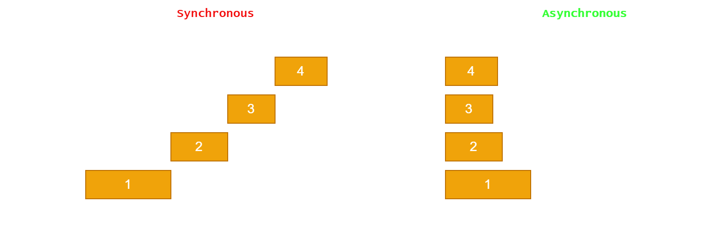

Accelerating Web Data Processing with Scalable Techniques
Scroll to the end to find the tdlr version.
As a budding machine learning engineer, data extraction at scale is crucial because it provides the foundation for building accurate and effective machine learning models. We commonly want larger data sets in ML as the large data set has the potential to give a more comprehensive representation of the signal and noise that we're interested in distinguishing in our models.
Common Key Considerations
- Dynamic Storage: Typically the fastest way to dynamically store cleaned and structured data is to use a database like SQLite.
- Construct efficient crawling paths: Design a crawling path that will effectively navigate through the data source to scrape the required data. To be thorough, this often involves an exhaustive and brute force approach, which emphasize the importance on optimising your code for speed.
- Respect the website’s robots.txt file: This file contains instructions for web crawlers and should be adhered to in order to avoid any legal issues.
- Optimize code for speed: Optimizing your code can help to reduce the amount of time it takes for your web scraper to complete its task.
How should we optimise the extraction process?
-
Proxies
-
Multi-threaded Processing or Asynchronous Processes

Firstly, we dont want to hammer the website from a single IP address and user-agent. Most servers will have a finite bandwidth that they dedicate to a single user, so exceeding this is likely to result in restricted usage due to suspected DOS attacks.
A good way to get around this is to access a proxy providing service. This is the bread and butter of web-scraping techniques and opens the door for the use of asychronous requests.
Asynchronous processing and multithreaded processing are two different approaches to executing multiple tasks concurrently in a program. Both approaches can be used to improve the performance and responsiveness of a program, but they differ in how they accomplish this.
Asynchronous programming involves executing multiple tasks concurrently by using non-blocking I/O and event-driven programming. In this approach, tasks are executed in separate threads, but they do not block the main thread. Instead, each task is executed as soon as it becomes ready, without waiting for other tasks to complete. This allows multiple tasks to be executed simultaneously, without slowing down the main thread.
Although requests can be sent concurrently, it is important to note that the rate limits can still be adhered to using semaphores; a variable that can be used to keep track of the number of concurrent tasks that are allowed to run at the same time. This is still of course faster than sequential execution, but just puts some reins on obliterating a website server.
Multithreaded processing, on the other hand, involves executing multiple tasks concurrently by using multiple threads. In this approach, each task is executed in a separate thread, and all threads run simultaneously. Multithreaded processing can improve the performance of a program by allowing multiple tasks to be executed in parallel.
TLDR
When optimizing the extraction process for webscraping, one should consider using proxies to avoid hammering the website from a single IP address and user-agent, as well as utilizing either asynchronous processes or multithreaded processing to improve the performance of the program by allowing multiple tasks to be executed in parallel. These methods should be used along side optimised storage methods.